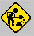
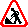
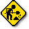

![[Everything Shii Knows]](../mediawiki/skins/common/images/wiki.png)
{kind=link}
Atwork.gif, the hardest working GIF on the Internet since at least 1993.
Original version (for the uninitiated)
{kind=link}
  He seems to have gained a gray background in some versions-- probably a sloppy copy-paste by some HARD WORKING Netizens
He seems to have gained a gray background in some versions-- probably a sloppy copy-paste by some HARD WORKING Netizens
Even if he gets a little worn out he will gain a nice red border as compensation
 Animated version demonstrates the difficulty of this little dude's work. He stops after 5 or 6 loops, but I don't blame him
Animated version demonstrates the difficulty of this little dude's work. He stops after 5 or 6 loops, but I don't blame him
This one doesn't seem to be working quite so hard. I wouldn't hire this one if I were you
 Now the road sign is a circle, I guess that's what they look like in Greece
Now the road sign is a circle, I guess that's what they look like in Greece
 Now he has gained a gorgeous out bevel. Still hard at work as a USDA government employee
Now he has gained a gorgeous out bevel. Still hard at work as a USDA government employee
Working in the Soviet Union, on the other hand, requires both an out bevel and an in bevel
 This one obviously isn't Russian as he is working very hard
This one obviously isn't Russian as he is working very hard
 Pathetic-looking EU version
 This French version has equal opportunities for all genders... although, that guy seems to be checking out the chick, and it looks like she has a handbag. No, not sure what's going on there.
This French version has equal opportunities for all genders... although, that guy seems to be checking out the chick, and it looks like she has a handbag. No, not sure what's going on there.
Obviously the Photoshop master who created this piece of art was too busy on his webpage to correct the misshapen edges.
 Misshapen atwork.gif is even lazier than the lazy one above
Misshapen atwork.gif is even lazier than the lazy one above
 This road sign uses fancy drop shadow technology to appear to hover above your monitor. Don't worry, it's an illusion
 Of course, his bevelled neighbour couldn't go long without getting his own drop shadow as well...
Of course, his bevelled neighbour couldn't go long without getting his own drop shadow as well...
Where we're going, we don't need borders for our road signs...
 ...eh. lame
...eh. lame
 I'm not sure what's going on here, I think he might be on strike
I'm not sure what's going on here, I think he might be on strike
I don't know where that dirt is going, I hope his coworkers are paying attention to that
 Scrawny version, this one probably shouldn't be working on a road crew
Scrawny version, this one probably shouldn't be working on a road crew
Woah! Urgent!! Important shit going down here
 Why?! Who made this abomination!
Why?! Who made this abomination!
Early example of "Internet comedy," as you can see this genre had a long way to go
Don't be a hater!
Don't be like these guys, they hatin
{kind=link}
{kind=link}